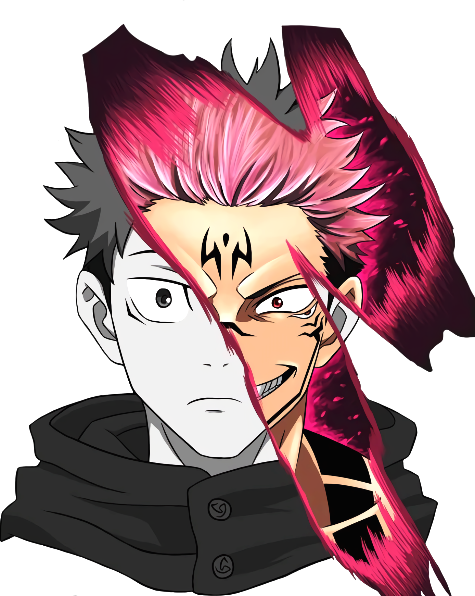

2018-still now
Don't say no one likes me!
Jast say there is no one like me...!
Yuji Itadori (Japanese: 虎杖悠仁, Hepburn: Itadori Yūji) is a fictional character and the main protagonist of the manga series Jujutsu Kaisen created by Gege Akutami. Yuji is a first-year Jujutsu Sorcerer at Tokyo Jujutsu High who is thrown into the world of sorcery after he ate a Cursed Object: a finger belonging to Ryomen Sukuna, a powerful Cursed Spirit—a being manifested from Cursed Energy from the negative emotions flowing from humans. With his classmates, Yuji exorcises Curses while trying to honor his grandfather's legacy and save others unconditionally so that when he is executed after eating all twenty fingers, he will not be alone in his death. Yuji and exceptional Cursed Techniques are developed as he faces down different Curses and the emotional blowback of his actions. Despite having only practiced using Cursed Energy for a few months, Yuji is tremendously powerful even without having become Sukuna's Vessel. Yuji believes strongly in the value of life and works to make sure everyone he meets, no matter how deep his connection to them may be, receives proper treatment.